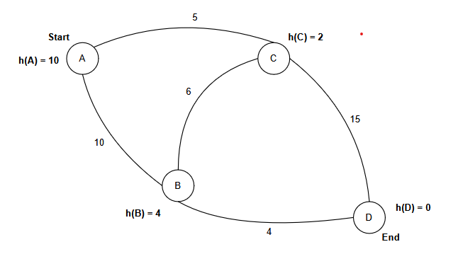

The aim of this Virtual Lab is to implement the A* pathfinding algorithm that dynamically finds the shortest path between two points , combining heuristic and cost-based approaches to efficiently navigate through a weighted graph, similar to real-world navigation systems.
Theory
The A* pathfinding algorithm is a widely used search algorithm that combines the strengths of Dijkstra's algorithm and Greedy Best-First Search. It leverages a heuristic function to estimate the cost from a given node to the goal, in addition to the actual cost from the start node to the current node. This combination allows A* to prioritize paths that are most likely to lead to the shortest (or lowest cost) solution. This blend of cost-based and heuristic-driven exploration makes A* highly efficient in navigating complex graphs and finding optimal paths.
Pathfinding algorithms, such as A*, are fundamental concepts in computer science with diverse real-world applications:
Navigation Systems: A* is commonly used in GPS navigation systems and online mapping services to calculate the shortest or fastest routes between locations, considering factors like distance, traffic, and road closures.
Game Development: A* is crucial in game AI, enabling characters or objects to find optimal paths through complex game levels or environments. It's used for enemy movement, character navigation, and resource gathering.
Robotics: Robots use A* to navigate physical spaces, plan collision-free paths, and reach target destinations, even in dynamic environments with obstacles.
Network Routing: A* is employed in network protocols to find the shortest or most efficient data transmission paths across networks, optimizing for latency and bandwidth.
Logistics and Supply Chain: A* helps optimize delivery routes, warehouse operations, and supply chain management by finding the most cost-effective paths for vehicles and goods.
Urban Planning: A* assists in planning efficient transportation networks, designing optimal routes for public transportation, and managing traffic flow in urban environments.
Autonomous Vehicles: Self-driving cars rely on pathfinding algorithms like A* to navigate roads, plan routes, and make real-time decisions while adhering to traffic rules and avoiding obstacles.
Procedure
The procedure for implementing the A* pathfinding algorithm is as follows:
Input: The graph representation (nodes, edges with weights), start node, and goal node.
Initialization: Create the following data structures:
Priority Queue (Open Set): Stores nodes, prioritized by their estimated total cost (f = g + h). Initially, contains only the start node.
g-Score (Cost from Start): A dictionary to track the actual cost (g) of reaching each node from the start node. Initialize g(start) = 0.
Heuristic Function (h): Estimates the cost from any node to the goal. Must be defined for all nodes.
Came From (Parent Nodes): A dictionary to keep track of the parent node for each node, used for path reconstruction.
Closed Set: A set to keep track of nodes already evaluated. Initially empty.
Start Node Initialization:
Set g(start) = 0.
Calculate f(start) = g(start) + h(start).
Add the start node to the priority queue (Open Set).
Main Loop (while Open Set is not empty):
Current Node Selection: Dequeue the node with the lowest f-value from the priority queue (Open Set). This is the current node.
Goal Check: If the current node is the goal node, the search is complete. Reconstruct the path by backtracking through the "Came From" dictionary.
Move Current Node to Closed Set: Add the current node to the Closed Set.
Neighbor Exploration: For each neighbor of the current node:
Tentative g-Score Calculation: Calculate the tentative g-value for the neighbor: tentative_g = g(current) + cost(current, neighbor).
Neighbor Evaluation:
Shorter Path Found OR Neighbor Not Visited: If tentative_g < g(neighbor) OR neighbor is not in the Open Set or Closed Set:
If neighbor is not in the Open Set, add it to the Open Set.
Duplicate in Open Set with Higher Cost: If neighbor is already in the Open Set but the new f(neighbor) is lower, update the f(neighbor) in the Open Set. (This might require re-sorting the priority queue depending on implementation).
No Path Found: If the Open Set becomes empty and the goal node has not been reached, there is no path.
Output: The reconstructed shortest path (if found) and its total cost.
Code
Example program
# Python
# Installation:
# - Ensure pygame is installed.
# - Run: pip install pygame
# How to Use:
# 1. First, select the Source and Destination nodes on the grid using the left mouse click.
# - Source Node: Orange
# - Destination Node: Cyan
# 2. Add walls to the grid by left-clicking on other cells.
# 3. Remove walls or nodes by right-clicking.
# 4. Press the Spacebar to start the A* search after setting the source and destination.
# 5. To refresh the grid, press the "C" key.
# Additional Notes:
# - The grid is represented visually.
# - Walls act as barriers that the pathfinding algorithm cannot traverse.
import pygame
import math
from queue import PriorityQueue
WIDTH=800
WIN=pygame.display.set_mode((WIDTH,WIDTH))
pygame.display.set_caption("A* Path finding")
RED = (255,0,0)
GREEN = (0,255,0)
BLUE = (0,0,255)
YELLOW = (255,255,0)
WHITE = (255,255,255)
BLACK = (0,0,0)
PURPLE = (128,0,128)
ORANGE = (255,165,0)
GREY = (128,128,128)
TURQUOISE = (64,224,208)
class Spot: #NODE CLASS
def __init__(self,row,col,width,total_rows):
self.row=row
self.col=col
self.x=row*width
self.y=col*width
self.color=WHITE
self.neighbors=[]
self.width=width
self.total_rows=total_rows
def get_pos(self):
return self.row,self.col
def is_closed(self):
return self.color==RED
def is_open(self):
return self.color==GREEN
def is_barrier(self):
return self.color==BLACK
def is_start(self):
return self.color==ORANGE
def is_end(self):
return self.color==TURQUOISE
def reset(self):
self.color=WHITE
def make_start(self):
self.color=ORANGE
def make_close(self):
self.color =RED
def make_open(self):
self.color=GREEN
def make_barrier(self):
self.color=BLACK
def make_end(self):
self.color=TURQUOISE
def make_path(self):
self.color=PURPLE
def draw(self ,win):
pygame.draw.rect(win,self.color,(self.x ,self.y ,self.width,self.width))
# Try adding diagonal movements
def update_neighbors(self,grid):
self.neighbors=[]
if self.row< self.total_rows-1 and not grid[self.row+1][self.col].is_barrier(): #DOWN
self.neighbors.append(grid[self.row+1][self.col])
if self.row>0 and not grid[self.row-1][self.col].is_barrier(): #UP
self.neighbors.append(grid[self.row-1][self.col])
if self.col< self.total_rows-1 and not grid[self.row][self.col+1].is_barrier(): #RIGHT
self.neighbors.append(grid[self.row][self.col+1])
if self.col>0 and not grid[self.row][self.col-1].is_barrier(): #LEFT
self.neighbors.append(grid[self.row][self.col-1])
def __lt__(self,other):
return False
def h(p1,p2):
x1,y1=p1
x2,y2=p2
return (abs(x1-x2)+abs(y1-y2)) # Try euclidean distance if implementing diagonal movements too
def reconstruct_path(came_from,current,draw):
while current in came_from:
current=came_from[current]
current.make_path()
draw()
def algorithm(draw,grid,start,end):
count=0
open_set=PriorityQueue()
open_set.put((0,count,start))
came_from={}
g_score={spot:float("inf")for row in grid for spot in row}
g_score[start]=0
f_score={spot:float("inf")for row in grid for spot in row}
f_score[start]=h(start.get_pos(),end.get_pos())
open_set_hash={start}
while not open_set.empty():
for event in pygame.event.get():
if event.type==pygame.QUIT:
pygame.quit()
current =open_set.get()[2]
open_set_hash.remove(current)
if current ==end:
reconstruct_path(came_from,end,draw)
end.make_end()
start.make_start()
return True
for neighbor in current.neighbors:
temp_g_score=g_score[current]+1
if temp_g_score< g_score[neighbor]:
came_from[neighbor]=current
g_score[neighbor]=temp_g_score
f_score[neighbor]=temp_g_score+h(neighbor.get_pos(),end.get_pos())
if neighbor not in open_set_hash:
count+=1
open_set.put((f_score[neighbor],count,neighbor))
open_set_hash.add(neighbor)
neighbor.make_open()
draw()
if current!=start:
current.make_close()
return False
def make_grid(rows,width):
grid=[]
gap=width//rows
for i in range(rows):
grid.append([])
for j in range(rows):
spot=Spot(i,j,gap,rows)
grid[i].append(spot)
return grid
def draw_grid(win,rows,width):
GAP=width//rows
for i in range(rows):
pygame.draw.line(win,GREY,(0,i*GAP),(width,i*GAP))
for j in range(rows):
pygame.draw.line(win,GREY,(j*GAP,0),(j*GAP,width))
def draw(win,grid,rows,width):
win.fill(WHITE)
for row in grid:
for spot in row:
spot.draw(win)
draw_grid(win,rows,width)
pygame.display.update()
def get_clicked_pos(pos,rows,width):
gap=width//rows
y,x=pos
row=y//gap
col=x//gap
return row,col
def main(win,width):
ROWS=50
grid=make_grid(ROWS,width)
start=None
end=None
run=True
while run:
draw(win,grid,ROWS,width)
for event in pygame.event.get():
if event.type==pygame.QUIT:
run=False
if pygame.mouse.get_pressed()[0]: #left
pos=pygame.mouse.get_pos()
row,col=get_clicked_pos(pos,ROWS,width)
spot= grid[row][col]
if not start and spot!=end:
start=spot
start.make_start()
elif not end and spot!=start:
end=spot
end.make_end()
elif spot !=end and spot !=start:
spot.make_barrier()
elif pygame.mouse.get_pressed()[2]: #right
pos=pygame.mouse.get_pos()
row,col=get_clicked_pos(pos,ROWS,width)
spot= grid[row][col]
spot.reset()
if spot==start:
start=None
elif spot==end:
end=None
if event.type==pygame.KEYDOWN:
if event.key==pygame.K_SPACE and start and end:
for row in grid:
for spot in row:
spot.update_neighbors(grid)
algorithm(lambda:draw(win,grid,ROWS,width),grid,start,end)
if event.key==pygame.K_c:
start=None
end=None
grid=make_grid(ROWS,width)
pygame.quit()
if __name__=='__main__':
main(WIN,WIDTH)
Graph and Heuristics

Heuristics (h values):
h(A) = 10
h(B) = 4
h(C) = 2
h(D) = 0
Understanding the Components
f(n) = g(n) + h(n): The total estimated cost of the path through node 'n'.
g(n): The actual cost of the path from the start node to node 'n'.
h(n): The estimated cost from node 'n' to the goal node (heuristic).
Priority Queue: A queue where items are prioritized based on their f(n) value (lowest f(n) gets the highest priority).
Initialization
Node
f(n)
g(n)
h(n)
Came From
A
10
0
10
-
Priority Queue (Iteration 1): Open Set = {(A, 10)}; Closed Set = {}
Iteration 1: Expand A
Successors of A: B, C
For B: g(B) = 10, h(B) = 4, f(B) = 14
For C: g(C) = 5, h(C) = 2, f(C) = 7
Updated Table:
Node
f(n)
g(n)
h(n)
Came From
A
10
0
10
-
B
14
10
4
A
C
7
5
2
A
Priority Queue (Iteration 2): Open Set = {(C, 7), (B, 14)}; Closed Set = {A}
For B: g(B) = g(C) + cost(C, B) = 5 + 6 = 11; h(B) = 4; f(B) = 15
Check if this is shorter than the current g(B):
Current g(B) = 10 (from A to B directly)
New g(B) = 11 (through C)
Since 11 is greater than 10, we DO NOT put (B,15) in the open set.
Updated Table:
Node
f(n)
g(n)
h(n)
Came From
A
10
0
10
-
B
14
10
4
A
C
7
5
2
A
D
20
20
0
C
Priority Queue (Iteration 3): Open Set = {(B, 14), (D, 20)}; Closed Set = {A, C}
Iteration 3: Expand B
Successor of B: D
For D: g(D) = 14, h(D) = 0, f(D) = 14
Updated Table:
Node
f(n)
g(n)
h(n)
Came From
A
10
0
10
-
B
14
10
4
A
C
7
5
2
A
D
14
14
0
B
Priority Queue (Iteration 4): Open Set = {(D, 14), (D, 20)}; Closed Set = {A, C, B}
Iteration 4: Expand D
D is the goal. We're done!
Optimal Path: A → B → D
Optimal Cost: 14
Graph Based Implementation
Node
G
H
F
From
Grid Based Implementation
You can click the blocks to change them into walls and create a maze.
Execution Step:
Click 'Next Step' to begin.
Works best on bigger screens.
Map implementation example
Here we showed how A* Pathfinding algorithm searces the shortest distance between two cordinates/nodes on a map
Here Yellow dots are the visited nodes and at the end red line shows the shortest distance
Works best on bigger screens.
Result
The A* pathfinding algorithm will apply an appropriate heuristic-based search method to find the shortest path from the start node to the goal node. It will consider both the actual cost to reach a node (g) and the estimated cost to the goal (h), using the formula f = g + h to prioritize node exploration. The algorithm will return the path of nodes if a solution is found, or indicate failure (no path) if no path exists.
Key Points:
g: The actual cost from the start node to the current node.
h: The heuristic estimate from the current node to the goal.
f: The total estimated cost to reach the goal (sum of g and h).
Result:
The algorithm will return the shortest path from the start node to the goal node if one exists.
If no path exists, it will return failure (typically represented as null or -1).
Quiz
References
Cormen, T. H., Leiserson, C. E., Rivest, R. L., Stein, C. (2022). Introduction to
Algorithms, Fourth Edition. United Kingdom: MIT Press.
Bhargava, A. (2016). Grokking Algorithms: An Illustrated Guide for Programmers and
Other Curious People. United States: Manning.